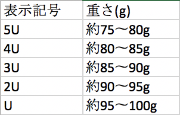

このサイトは主にバドミントンを始めたいけど具体的に
どういうスポーツなのか、やるには何を準備しないといけないのか、などを
悩んでるバドミントン初心者のために僕が教えられる知識を詰め込んだ
サイトです！
はじめに、バドミントンの基礎的な知識を載せますので、バドミントンのルールやラケット選びの項目がわかるよう知識に不安な人は読んでおきましょう。
まず、バドミントンはシャトルと呼ばれる羽をラケットで相手の陣にに打ち込むことを目的としたスポーツです。テニスや卓球などと違って、バドミントンはシャトルが一度地面に触れてしまったらラリーは終了となります（そもそもシャトルは跳ね返るほど弾力はないですが）。
次に、ラケットの各箇所にはそれぞれ名前があることを知りましょう。字の説明だけではわかりにくいので右の図も参考にしてみてください。
ラケット全体の外枠のことをフレームと言います。
ガットと呼ばれるラケットに張るストリングの外枠のことをヘッドと呼び、ラケットにインパクトをつけるためにしなりが加わる部分のことをシャフト、利き手でラケットを握るところをハンドルと呼びます。
最低限この四つは覚えておけばラケットの知識としては大丈夫です。
バドミントンのゲームの形式はは基本的にシングルスとダブルスの二種類です（トリプルスというのも実はありますが、ここでは割愛します）。
ここではシングルスとダブルスのエンドライン、つまりインとアウトの境界線（下記）や試合での基本的な流れとルールを説明します。
公式バドミントンのゲームはじゃんけんでサーブ権を決め、任意のクリアのラリーの後に21点1ゲーム、
2ゲーム先取の試合をする
コートは１、2ゲームめではゲームごと、３ゲームめでは選手のどちらかが11点取った時点で交代する
各ゲームで選手のどちらかが11点を取ると１分間、ゲーム間では２分のインターバルというものが取れる。選手はこのインターバルの間でコーチからアドバイスをもらったり水分補給をしたりする
サーブは、前ラリーで得点した選手が得点数が奇数だった場合はコートの左側から、偶数の場合は右側から対
角線に向けてサーブを打つ
シングルスでは、１対１でゲームをするためコートはフルには使わず左右の幅を少し縮めて使い、サーブは対角線に向け手前の線より奥を狙う
ダブルスでは、２対２でゲームをするためコートはフルに使うが、サーブは手前
の線よりは奥に、奥の線よりは手前を狙う
ダブルスの場合、サーブをパートナーと交互にするので、サーブ権が相手側にわ
たるまで片方がサーブをし、再びサーブ権が戻ってきた時はもう片方がサーブを
する、という風にサーブを回していく なお、レシーブは最後サーブしたときの
位置で受ける
バドミントンのラケットは持ってみるとテニスとかと比べると軽く感じますが、短い時間で何度も振るので自分に合う重さのラケットを選ぶことが大事です。ここではラケットの重さやバランス、シャフトの硬さなどラケットを選ぶ上で必要な知識を少し浅めにですが網羅していこうと思います。
まずラケットの重さには、Uという単位で大体のメーカーは指定されていることを覚えておきましょう。実際Uが何グラムかは下記の図の通りです。
図でわかる通り、5Uが一番軽く、そこからUが経るごとに大体5g重くなっていきます。傾向として、上級者など腕に力がある選手は2Uあたりを、中級者や初級者は3Uや4Uなどをよく使います。しかし、ラケット全体は軽くしてラケットの重心を重くすることで力軽めにスマッシュが打てるようにする選手もいるので右の”Balance”も参考にしてみてください。
ラケットには単純に重さだけでなく、その重さの重心がどこにあるかということも重要です。その重さのバランスポジションは三種類に区別されます。
・トップライト＝グリップ部分に重心がかかっており、振り抜きがよくなりシャトルを遠くに打ちやすい
・イーブン＝シャフト部分とグリップとのバランスが均等なのでコントロール性に優れておりコースを攻めやすい
・トップヘビー＝ヘッド部分に重心がかかっており、スマッシュなどの攻撃などで重い弾が打てる
始めたばかりはシャトルをラケットのスイートスポット（※）に当てることが重要なので、トップライトやイーブンで始め、ラケットで打つことに慣れ、より重く速い弾を打ち込んでやりたくなったらトップヘビーにラケットを替えるのがオススメです。
※スイートスポット＝シャトルを打つのに最適とされている位置で基本的にガット中心部分のことを指します。
ラケットには、重さやバランス以外にも、シャフトのしなりやハンドルの太さも買う上で視野に入れて置くのをお勧めします。
シャフトのしなり自体に浸透している用語は存在しないのですが、ラケットはしなりやすいとハイクリアと呼ばれるコートの奥に高く飛ばす弾などが打ちやすくなります。シャフトが硬いとシャトルの弾を打つにはかなりのパワーが要りますが、その分スマッシュなどがよく重く沈むようになります。シャフトの硬さは店頭の店員さんに相談したりネットでラケットの概要欄などを見て参考にしたりするといいと思います。
ハンドルの太さにも実はラケットの重さのように記号がついています。その太さは、細い順からG6、G5、G4の通りです。ラケットには、シャフトとハンドルの間に2U6、2U5、2U4のように表示されています（Gはほとんどの場合省略されている）。しかし、あえてハンドルを細くして、その上に巻くグリップを太くすることで柔らかく握りやすい仕様にする選手もいますし、そこは友達のラケットを借りたり、店員さんと相談するといいと思います。
では実際にどのラケットを選べばいいのか、YONEXのホームページには重さやバランスからどのらケットが合うのかを表したグラフが載っています。ラケットを選ぶ上でこのグラフを参考にするといいと思います。 www.yonex.co.jp/badminton/racquets/images/bado_selector.jpg
バドミントンを始める上で不安なことがあれば、それが解決したり、スッキリできるようこのサイトを作成しましたが、どうだったでしょうか。このサイトを通してバドミントンを始めてみたいと思ってくれればとても嬉しく思います。
{kind=link}